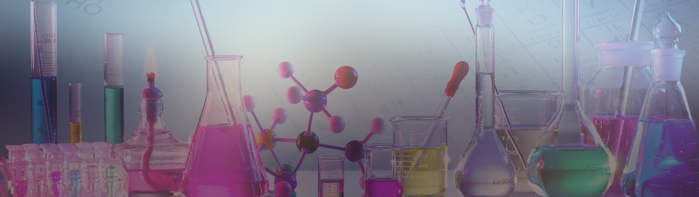

Acids and Bases
Overview
1. Intro.2. Strong Acid/Base.
3. Weak Acid/Base.
4. Buffers.
4.1. Titration.
Review
In this section we will be dealing a lot with logarithms and you should get comfy working with them. But worry not! calculating logs is pretty simple. Here is a quick review:
As you can see, logs are a lot like snails! Use this mnemonic next time you have to calculate log.
1.Intro: acids and bases
Historically scientists came up with 3 definitions definitions of acids and bases. In biochemistry we work with Brønsted–Lowry definition. In the Brønsted–Lowry theory acids and bases are defined by the way they react with each other: an acid donates a proton (H+) and a base accepts a proton. Therefor, it is a proton transfer reaction. The species then form conjugate pairs.
Acids and bases can be divide into strong and weak. You will encounter problems that will involve strong and weak acids/bases. Both of these types of problems will have its own strategies and shortcuts, therefore it is important that you can identify what type of acid or base you are dealing with.
2.Strong acids and bases
Strong acids such as HCl, HNO3 and H2SO4 dissociate completely in aqueous solution (water) into H3O+ hydronium and conjugate bases Cl-, NO3-, SO4- respectively. Some students get confused between H3O+ and H+. Note that in water H+ does not exists by itself, because it is too reactive it will react with H2O to form H3O+, however for simplicity H+ and H3O+ are used interchangeably.
Strong bases such as NaOH and KOH dissociate completely in in aqueous solution (water) into OH- hydroxide and conjugate acids Na+ and K+ respectively.
Notice how the equilibrium arrow points only to the right, signifying complete dissociation of the strong acid.
How to calculate it?
When it comes to strong acid/base the calculations are very straight forward.
pH = -log[H3O+]
Since strong acid dissociate completely into H3O+ and the conjugate base the concentration of acid is going to be equal the concentration of H3O+, therefore:
pH = -log[Strong Acid]
pOH = -log[Strong Base]
pH = 14 - pOH
pH = -log[1*10-8] = 8
But wait a minute, you just dropped a strong acid into water, but your pH increased in other words became more basic?! Consider alternative situation, you have very dilute strong base, 1*10^-8 M.
pOH = -log[1*10^-8 M] = 8
pH = 14 - 8 = 6
Again, we seem to have the same problem. The pH should be more basic not acid. The simple explanation is that naturally the pH of water is 7, which by definition means that there are always 1*10^-7 M H+ ions already present in water. So as long as the concentration of the strong acid/base is below 1*10^-7 it will not change the pH of water. In reality it will change the pH slightly and there are ways to calculate precisely how much but for the purposes of our class we ignore it.
pH = 7
3.Weak acids and bases
Weak acids such as CH3COOH (acetic acid) only partially dissociate in water into H+ and conjugate base CH3COO- (acetate).
Weak bases such as NH3 (ammonia) are best described as a partial proton acceptor that react with water to produce OH- and conjugate acid NH4+.
Beware: This is a good example of why we use Brønsted–Lowry acid/base definition.
Notice how the equilibrium arrow points in both directions, signifying partial dissociation of the weak acid.
How to calculate it?
To find out the pH of a weak acid solution we use the same equation that we used to find out pH of a strong acid:
pH = -log[H3O+]
However, since weak acid only partially dissociate in water, the conc. of H3O+ ions is not equal to the conc. of the weak acid. We need to use acid disassociation constant Ka to find the conc of H3O.
Ka =
[Products]
[Reactants]
=
Calculate pH of a 0.01 M benzoic acid solution.
Luckily, we know that conc. of H3O+ and conjugate base will be the same, because both are products of the same proton transfer reaction. We can exploit this property to find out conc of H3O+. To keep calculations organized we will use an Initial Change Equilibrium (ICE) table. To understand this table imagine you are dissolving weak acid in water. Initially you have weak acid and water. Immediately after mixing the two together the concentrations of all species (water, weak acid, H3O+ and conjugate base) will Change. After some time the Equilibrium will be established and the conc. of all species will remain constant.
ICE table:
Next, set the Ka equal to the ICE table values:
Ka = 6.5*10^(-5) =
Notice, since x is going to be very small relative to the weak acid conc, we can drop it from the denominator.
Ka = 6.5*10^(-5) =
Solving, this equation is now trivial.
6.5*10^(-5) * [0.01] = [x][x]
6.5*10^(-7) = x^2
x = x = 8.06*10^-4
pH = -log(8.06*10^-4)
pH = 3.09
4.Buffers
Buffers are water solutions of weak acid/base that are used to control pH.
Buffers are kinda like springs. No matter how hard you push the spring, it always relaxes back. Unless of course you go bananas and break the spring!
To appreciate buffers, you have to truly understand two things:
1. Weak acid conjugate base are two pairs of the same molecule. And vise versa for weak base/conjugate acid.
2. Acid/base reactions are happening in water.
CH3COOH and its conjugate base CH3COO- form buffer in water. If we add some H3O, normally it would lower the pH, because pH = [H3O+]. However, instead H3O+ will react with CH3COO- to produce H2O and CH3COOH. Likewise, addition of OH- does not cause, pH to rise.
4.1Titration
Is a technique that involves slow dripping "titration" of a strong acid/base into a solution of weak acid/base that could be used to:
- Determine unknown conc. of the weak acid or base.
- Determine unknown strength or Ka of the acid/base.
- Prepare a buffer solution.
This is an example how a titration of weak acid CH3COOH with strong base OH- is performed. At first, we only have CH3COOH in an acidic solution, so the pH=0. In step two, we add 0.5 equivalents of the OH- or 50% of OH- that is required to completely deprotonate the CH3COOH, this is why it is called half equivalence point. At this point the ratio of CH3COOH/CH3COO- = 0.5. In step 3, we add another 0.5 and completley deprotonate the CH3COOH converting 100% of it into CH3COO-, an thus we call it equivalence point
How to calculate it?
Henderson-Hasselbalch equation should be the first thing that comes to your mind whenever you think of buffers.
We can use this equation to prove that at the half equivalence point pH = pKa.
At the half equivalence point:
[A-] = 0.5 and [HA] = 0.5
Therefore, [A-]/[HA] = 1
And log (1) = 0
Prepare 1L of 0.1 M buffer of CH3COOH Acetic acid (Ka = 1.76*10^-5) at pH = 5.
A. If you are given stock 1 M CH3COOH and 1 M CH3COO-
B. If you are given stock 1 M CH3COOH and 1 M NaOH
The result of Henderson-Hasselbalch gives us a ratio of base/acid. Think if it makes sense that the ratio is higher than 1 in our case? Look back at the titration curve of the acetic acid. Do we have more of the acid form (HA) or base form (A-) at pH 5?
(Answer: We have more of the base form)
A.2 Calculate the fraction of acid and the fraction of base.
by definition of fraction:
[A-] + [HA] = 1
[A-] = 1 - [HA]
And we know that:
Therefore:
1.76[HA] + [HA] = 1
2.76[HA] = 1
[HA] = 1/2.76
[HA] = 0.36
And since we already solved that: [A-] = 1 - [HA]
[A-] = 1 - 0.36
[A-] = 0.64
Now we know the fractions of [HA] = 0.36 and [A-] = 0.64. Again think about it does that makes scene that the base fraction is bigger?
A.3 Next, we need to find the actual molar concentrations of [HA] and [A-] of the desired buffer. This step is pretty easy, since we already know the fractions we just multiply them by the desired concentrations:
[A-] = 0.36 * 0.1 M (of CH3COO-) = 0.036 M
[HA] = 0.64 * 0.1 M (of CH3COOH) = 0.064 M
A.4 And finally we are ready to calculate the volumes of [HA] and [A-]. For that we will use a dilution equation:
Dilution equation: (Stock Concentration)*(Stock Volume) = (Desired Concentration)*(Desired Volume).
Assume that the Stock Volume is unknown and set it x, and solve for x:
(1 M)(x) = (0.036 M)(1L)
And
(1 M)(x) = (0.064 M)(1L)
So, to finalize:
36ml of CH3COOH
64ml of CH3COO-
900ml of H2O, do not forget about the water!
B. This problem is only slightly different. If we are given stock of weak acid, but instead of its conjugate base, we are given strong base, the trick is to recognize that weak acid and its conjugate base are two forms of the same molecule. Therefore we can generate one form from the other with strong acid or base. We perform the same calculations but at the end we add:
100ml of CH3COOH (64ml + 36ml)
64ml of NaOH
836ml of H2O